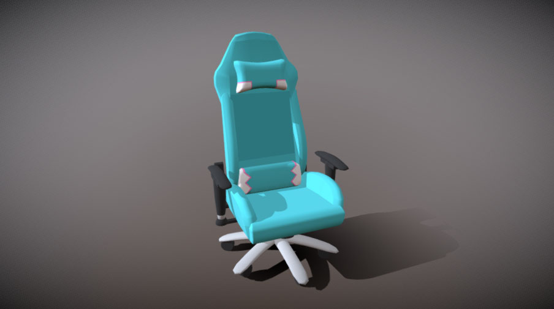
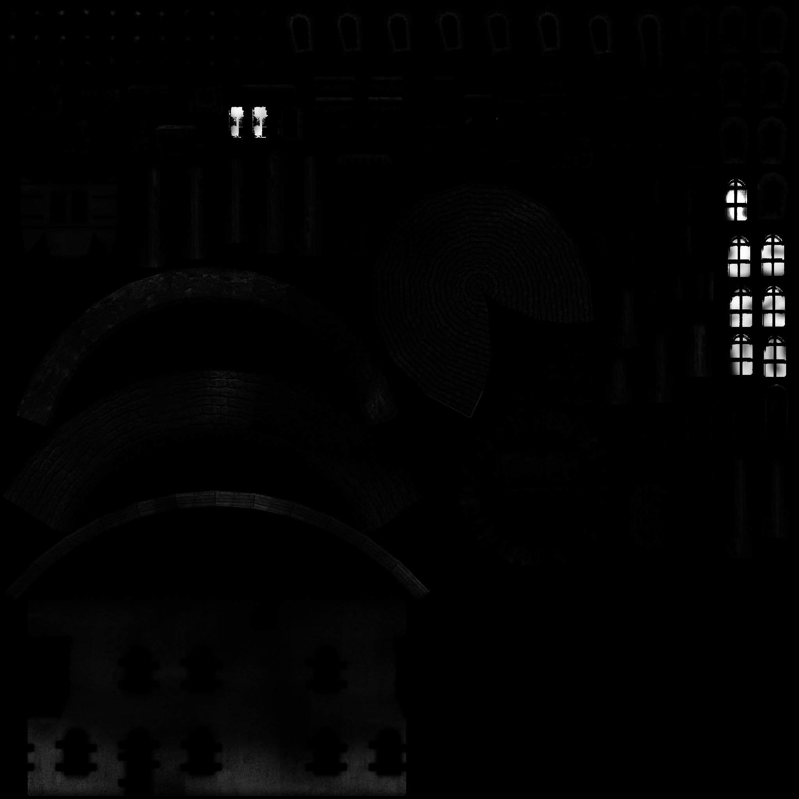

WebGL2 Charger des fichiers Obj avec Mtl
Dans l’article précédent, nous avons analysé des fichiers .OBJ. Dans cet article, analysons leurs fichiers de matériaux .MTL complémentaires.
Avertissement : Ce parser .MTL n’est pas conçu pour être exhaustif ou parfait, ni pour gérer tous les fichiers .MTL. Il s’agit plutôt d’un exercice pour parcourir la gestion de ce qu’on rencontre en chemin. Cela dit, si vous rencontrez des problèmes importants et leurs solutions, un commentaire en bas de page pourrait être utile aux autres s’ils choisissent d’utiliser ce code.
Nous avons chargé cette chaise sous licence CC-BY 4.0 par haytonm trouvée sur Sketchfab.

Elle a un fichier .MTL correspondant qui ressemble à ceci :
# Blender MTL File: 'None'
# Material Count: 11
newmtl D1blinn1SG
Ns 323.999994
Ka 1.000000 1.000000 1.000000
Kd 0.500000 0.500000 0.500000
Ks 0.500000 0.500000 0.500000
Ke 0.0 0.0 0.0
Ni 1.000000
d 1.000000
illum 2
newmtl D1lambert2SG
Ns 323.999994
Ka 1.000000 1.000000 1.000000
Kd 0.020000 0.020000 0.020000
Ks 0.500000 0.500000 0.500000
Ke 0.0 0.0 0.0
Ni 1.000000
d 1.000000
illum 2
newmtl D1lambert3SG
Ns 323.999994
Ka 1.000000 1.000000 1.000000
Kd 1.000000 1.000000 1.000000
Ks 0.500000 0.500000 0.500000
Ke 0.0 0.0 0.0
Ni 1.000000
d 1.000000
illum 2
... similaire pour 8 autres matériaux
En consultant une description du format de fichier .MTL,
on peut voir que le mot-clé newmtl commence un nouveau matériau avec le nom donné, et
en dessous se trouvent tous les paramètres de ce matériau. Chaque ligne commence par un mot-clé
similaire au fichier .OBJ, donc on peut commencer avec un cadre similaire :
function parseMTL(text) {
const materials = {};
let material;
const keywords = {
newmtl(parts, unparsedArgs) {
material = {};
materials[unparsedArgs] = material;
},
};
const keywordRE = /(\w*)(?: )*(.*)/;
const lines = text.split('\n');
for (let lineNo = 0; lineNo < lines.length; ++lineNo) {
const line = lines[lineNo].trim();
if (line === '' || line.startsWith('#')) {
continue;
}
const m = keywordRE.exec(line);
if (!m) {
continue;
}
const [, keyword, unparsedArgs] = m;
const parts = line.split(/\s+/).slice(1);
const handler = keywords[keyword];
if (!handler) {
console.warn('unhandled keyword:', keyword);
continue;
}
handler(parts, unparsedArgs);
}
return materials;
}
Ensuite, il suffit d’ajouter des fonctions pour chaque mot-clé. La documentation indique que :
Nsest le paramètre de brillance spéculaire de l’article sur les lumières ponctuellesKaest la couleur ambiante du matériauKdest la couleur diffuse qui était notre couleur dans l’article sur les lumières ponctuellesKsest la couleur spéculaireKeest la couleur émissiveNiest la densité optique. Nous ne l’utiliserons pasdsignifie “dissolve” qui est l’opacitéillumspécifie le type d’illumination. Le document liste 11 types. Nous l’ignorerons pour l’instant.
J’ai hésité à conserver ces noms tels quels. Un mathématicien aime les noms courts. La plupart des guides de style de code préfèrent des noms descriptifs, donc j’ai décidé de faire ainsi.
function parseMTL(text) {
const materials = {};
let material;
const keywords = {
newmtl(parts, unparsedArgs) {
material = {};
materials[unparsedArgs] = material;
},
+ Ns(parts) { material.shininess = parseFloat(parts[0]); },
+ Ka(parts) { material.ambient = parts.map(parseFloat); },
+ Kd(parts) { material.diffuse = parts.map(parseFloat); },
+ Ks(parts) { material.specular = parts.map(parseFloat); },
+ Ke(parts) { material.emissive = parts.map(parseFloat); },
+ Ni(parts) { material.opticalDensity = parseFloat(parts[0]); },
+ d(parts) { material.opacity = parseFloat(parts[0]); },
+ illum(parts) { material.illum = parseInt(parts[0]); },
};
...
return materials;
}
J’ai aussi hésité à essayer de deviner le chemin vers chaque fichier .MTL ou de le spécifier manuellement. En d’autres termes, on pourrait faire ceci :
// pseudo code - spécifier manuellement le chemin pour les fichiers .OBJ et .MTL
const obj = downloadAndParseObj(pathToOBJFile);
const materials = downloadAndParseMtl(pathToMTLFile);
Ou on peut faire ceci :
// pseudo code - deviner le chemin du fichier .MTL basé sur le fichier .OBJ
const obj = downloadAndParseObj(pathToOBJFile);
const materials = downloadAndParseMtl(pathToOBJFile, obj);
J’ai choisi la deuxième option, dont je ne suis pas totalement sûr qu’elle soit bonne ou mauvaise. Selon la documentation, un fichier .OBJ peut contenir des références à plusieurs fichiers .MTL. Je n’en ai jamais vu d’exemple, mais je suppose que l’auteur de la documentation l’a fait.
De plus, je n’ai jamais vu le fichier .MTL portant un nom différent du fichier .OBJ.
En d’autres termes, si le fichier .OBJ s’appelle bananas.obj, le fichier .MTL
s’appelle presque toujours bananas.mtl.
Cela dit, la spécification dit que les fichiers .MTL sont spécifiés dans le fichier
.OBJ, donc j’ai décidé d’essayer de calculer les chemins des fichiers .MTL.
En partant du code de l’article précédent, nous séparons l’URL du fichier .OBJ, puis construisons de nouvelles URLs pour les fichiers .MTL relativement au fichier .OBJ. Enfin, nous les chargeons tous, les concaténons puisque ce sont des fichiers texte, et les passons à notre parseur.
-const response = await fetch('resources/models/chair/chair.obj');
+const objHref = 'resources/models/chair/chair.obj';
+const response = await fetch(objHref);
const text = await response.text();
const obj = parseOBJ(text);
+const baseHref = new URL(objHref, window.location.href);
+const matTexts = await Promise.all(obj.materialLibs.map(async filename => {
+ const matHref = new URL(filename, baseHref).href;
+ const response = await fetch(matHref);
+ return await response.text();
+}));
+const materials = parseMTL(matTexts.join('\n'));
Nous devons maintenant utiliser les matériaux. D’abord, lors de la configuration des parties, nous utiliserons le nom du matériau extrait du fichier .OBJ et nous l’utiliserons pour chercher un matériau parmi ceux que nous venons de charger.
-const parts = obj.geometries.map(({data}) => {
+const parts = obj.geometries.map(({material, data}) => {
...
// crée un tampon pour chaque tableau en appelant
// gl.createBuffer, gl.bindBuffer, gl.bufferData
const bufferInfo = twgl.createBufferInfoFromArrays(gl, data);
const vao = twgl.createVAOFromBufferInfo(gl, meshProgramInfo, bufferInfo);
return {
- material: {
- u_diffuse: [1, 1, 1, 1],
- },
+ material: materials[material],
bufferInfo,
vao,
};
});
Lors du rendu, notre assistant nous permet de passer plus d’un ensemble de valeurs d’uniform.
function render(time) {
...
for (const {bufferInfo, vao, material} of parts) {
// configure les attributs pour cette partie.
gl.bindVertexArray(vao);
// appelle gl.uniform
twgl.setUniforms(meshProgramInfo, {
u_world,
- u_diffuse: material.u_diffuse,
- });
+ }, material);
// appelle gl.drawArrays ou gl.drawElements
twgl.drawBufferInfo(gl, bufferInfo);
}
requestAnimationFrame(render);
}
Ensuite, nous devons modifier les shaders. Puisque les matériaux ont des paramètres spéculaires, nous allons ajouter le calcul spéculaire de l’article sur l’éclairage ponctuel, sauf avec une différence : nous calculerons l’éclairage spéculaire depuis une lumière directionnelle au lieu d’une lumière ponctuelle.
ambient et emissive nécessitent peut-être une explication. ambient est la couleur
du matériau sous une lumière sans direction. Nous pouvons la multiplier par une couleur
u_ambientLight et définir cette couleur de lumière à quelque chose de plus que du noir
si on veut la voir. Cela tend à “laver” les couleurs.
emissive est la couleur du matériau indépendamment de toutes les lumières, donc on la
ajoute simplement. emissive pourrait être utilisé si vous avez une zone qui brille.
Voici le nouveau shader.
const vs = `#version 300 es
in vec4 a_position;
in vec3 a_normal;
in vec4 a_color;
uniform mat4 u_projection;
uniform mat4 u_view;
uniform mat4 u_world;
+uniform vec3 u_viewWorldPosition;
out vec3 v_normal;
+out vec3 v_surfaceToView;
out vec4 v_color;
void main() {
- gl_Position = u_projection * u_view * a_position;
+ vec4 worldPosition = u_world * a_position;
+ gl_Position = u_projection * u_view * worldPosition;
+ v_surfaceToView = u_viewWorldPosition - worldPosition.xyz;
v_normal = mat3(u_world) * a_normal;
v_color = a_color;
}
`;
const fs = `#version 300 es
precision highp float;
in vec3 v_normal;
+in vec3 v_surfaceToView;
in vec4 v_color;
-uniform vec4 u_diffuse;
+uniform vec3 diffuse;
+uniform vec3 ambient;
+uniform vec3 emissive;
+uniform vec3 specular;
+uniform float shininess;
+uniform float opacity;
uniform vec3 u_lightDirection;
+uniform vec3 u_ambientLight;
out vec4 outColor;
void main () {
vec3 normal = normalize(v_normal);
+ vec3 surfaceToViewDirection = normalize(v_surfaceToView);
+ vec3 halfVector = normalize(u_lightDirection + surfaceToViewDirection);
float fakeLight = dot(u_lightDirection, normal) * .5 + .5;
+ float specularLight = clamp(dot(normal, halfVector), 0.0, 1.0);
- vec4 diffuse = u_diffuse * v_color;
+ vec3 effectiveDiffuse = diffuse * v_color.rgb;
+ float effectiveOpacity = opacity * v_color.a;
- outColor = vec4(diffuse.rgb * fakeLight, diffuse.a);
+ outColor = vec4(
+ emissive +
+ ambient * u_ambientLight +
+ effectiveDiffuse * fakeLight +
+ specular * pow(specularLight, shininess),
+ effectiveOpacity);
}
`;
Et avec ça, on obtient quelque chose qui ressemble beaucoup à l’image ci-dessus :
Essayons de charger un fichier .OBJ qui a un .MTL qui référence des textures.
J’ai trouvé ce modèle 3D de moulin à vent sous licence CC-BY-NC 3.0 par ahedov.

Son fichier .MTL ressemble à ceci :
# Blender MTL File: 'windmill_001.blend'
# Material Count: 2
newmtl Material
Ns 0.000000
Ka 1.000000 1.000000 1.000000
Kd 0.800000 0.800000 0.800000
Ks 0.000000 0.000000 0.000000
Ke 0.000000 0.000000 0.000000
Ni 1.000000
d 1.000000
illum 1
map_Kd windmill_001_lopatky_COL.jpg
map_Bump windmill_001_lopatky_NOR.jpg
newmtl windmill
Ns 0.000000
Ka 1.000000 1.000000 1.000000
Kd 0.800000 0.800000 0.800000
Ks 0.000000 0.000000 0.000000
Ke 0.000000 0.000000 0.000000
Ni 1.000000
d 1.000000
illum 1
map_Kd windmill_001_base_COL.jpg
map_Bump windmill_001_base_NOR.jpg
map_Ns windmill_001_base_SPEC.jpg
On peut voir que map_Kd, map_Bump et map_Ns spécifient tous des fichiers image.
Ajoutons-les à notre parseur .MTL :
+function parseMapArgs(unparsedArgs) {
+ // TODO: gérer les options
+ return unparsedArgs;
+}
function parseMTL(text) {
const materials = {};
let material;
const keywords = {
newmtl(parts, unparsedArgs) {
material = {};
materials[unparsedArgs] = material;
},
Ns(parts) { material.shininess = parseFloat(parts[0]); },
Ka(parts) { material.ambient = parts.map(parseFloat); },
Kd(parts) { material.diffuse = parts.map(parseFloat); },
Ks(parts) { material.specular = parts.map(parseFloat); },
Ke(parts) { material.emissive = parts.map(parseFloat); },
+ map_Kd(parts, unparsedArgs) { material.diffuseMap = parseMapArgs(unparsedArgs); },
+ map_Ns(parts, unparsedArgs) { material.specularMap = parseMapArgs(unparsedArgs); },
+ map_Bump(parts, unparsedArgs) { material.normalMap = parseMapArgs(unparsedArgs); },
Ni(parts) { material.opticalDensity = parseFloat(parts[0]); },
d(parts) { material.opacity = parseFloat(parts[0]); },
illum(parts) { material.illum = parseInt(parts[0]); },
};
...
Note : J’ai créé parseMapArgs parce que selon la spécification,
il y a plein d’options supplémentaires qu’on ne voit pas dans ce fichier. Il nous faudrait
une refactorisation majeure pour les utiliser, mais pour l’instant j’espère gérer les noms
de fichiers avec des espaces et sans options.
Pour charger toutes ces textures, nous pourrions utiliser le code de l’article sur les textures, mais utilisons à nouveau nos assistants pour alléger le code.
Deux matériaux peuvent référencer la même image, donc gardons toutes les textures dans un objet par nom de fichier pour ne pas en charger deux fois.
const textures = {};
// charge les textures pour les matériaux
for (const material of Object.values(materials)) {
Object.entries(material)
.filter(([key]) => key.endsWith('Map'))
.forEach(([key, filename]) => {
let texture = textures[filename];
if (!texture) {
const textureHref = new URL(filename, baseHref).href;
texture = twgl.createTexture(gl, {src: textureHref, flipY: true});
textures[filename] = texture;
}
material[key] = texture;
});
}
Le code ci-dessus parcourt chaque propriété de chaque matériau. Si la propriété se termine
par "Map", il crée une URL relative, crée une texture et l’assigne au matériau. Notre
assistant chargera l’image dans la texture de façon asynchrone.
Nous allons aussi mettre une texture blanche 1x1 que nous pouvons utiliser pour tout matériau qui ne référence pas de texture. Ainsi, nous pouvons utiliser le même shader. Sinon, il nous faudrait des shaders différents, un pour les matériaux avec texture et un autre pour les matériaux sans.
-const textures = {};
+const textures = {
+ defaultWhite: twgl.createTexture(gl, {src: [255, 255, 255, 255]}),
+};
Assignons aussi des valeurs par défaut pour tout paramètre de matériau manquant.
+const defaultMaterial = {
+ diffuse: [1, 1, 1],
+ diffuseMap: textures.defaultWhite,
+ ambient: [0, 0, 0],
+ specular: [1, 1, 1],
+ shininess: 400,
+ opacity: 1,
+};
const parts = obj.geometries.map(({material, data}) => {
...
// crée un tampon pour chaque tableau en appelant
// gl.createBuffer, gl.bindBuffer, gl.bufferData
const bufferInfo = twgl.createBufferInfoFromArrays(gl, data);
const vao = twgl.createVAOFromBufferInfo(gl, meshProgramInfo, bufferInfo);
return {
- material: materials[material],
+ material: {
+ ...defaultMaterial,
+ ...materials[material],
+ },
bufferInfo,
vao,
};
});
Pour utiliser les textures, nous devons modifier le shader. Utilisons-les une à la fois. Nous commencerons par la diffuse map.
const vs = `#version 300 es
in vec4 a_position;
in vec3 a_normal;
+in vec2 a_texcoord;
in vec4 a_color;
uniform mat4 u_projection;
uniform mat4 u_view;
uniform mat4 u_world;
uniform vec3 u_viewWorldPosition;
out vec3 v_normal;
out vec3 v_surfaceToView;
+out vec2 v_texcoord;
out vec4 v_color;
void main() {
vec4 worldPosition = u_world * a_position;
gl_Position = u_projection * u_view * worldPosition;
v_surfaceToView = u_viewWorldPosition - worldPosition.xyz;
v_normal = mat3(u_world) * a_normal;
+ v_texcoord = a_texcoord;
v_color = a_color;
}
`;
const fs = `#version 300 es
precision highp float;
in vec3 v_normal;
in vec3 v_surfaceToView;
+in vec2 v_texcoord;
in vec4 v_color;
uniform vec3 diffuse;
+uniform sampler2D diffuseMap;
uniform vec3 ambient;
uniform vec3 emissive;
uniform vec3 specular;
uniform float shininess;
uniform float opacity;
uniform vec3 u_lightDirection;
uniform vec3 u_ambientLight;
out vec4 outColor;
void main () {
vec3 normal = normalize(v_normal);
vec3 surfaceToViewDirection = normalize(v_surfaceToView);
vec3 halfVector = normalize(u_lightDirection + surfaceToViewDirection);
float fakeLight = dot(u_lightDirection, normal) * .5 + .5;
float specularLight = clamp(dot(normal, halfVector), 0.0, 1.0);
- vec3 effectiveDiffuse = diffuse.rgb * v_color.rgb;
- float effectiveOpacity = v_color.a * opacity;
+ vec4 diffuseMapColor = texture(diffuseMap, v_texcoord);
+ vec3 effectiveDiffuse = diffuse * diffuseMapColor.rgb * v_color.rgb;
+ float effectiveOpacity = opacity * diffuseMapColor.a * v_color.a;
outColor = vec4(
emissive +
ambient * u_ambientLight +
effectiveDiffuse * fakeLight +
specular * pow(specularLight, shininess),
effectiveOpacity);
}
`;
Et on obtient des textures !
En regardant le fichier .MTL, on peut voir un map_Ks qui est essentiellement
une texture en noir et blanc qui spécifie à quel point une surface particulière
est brillante, ou autrement dit quelle quantité de réflexion spéculaire est utilisée.

Pour l’utiliser, il suffit de mettre à jour le shader puisque nous chargeons déjà toutes les textures.
const fs = `#version 300 es
precision highp float;
in vec3 v_normal;
in vec3 v_surfaceToView;
in vec2 v_texcoord;
in vec4 v_color;
uniform vec3 diffuse;
uniform sampler2D diffuseMap;
uniform vec3 ambient;
uniform vec3 emissive;
uniform vec3 specular;
+uniform sampler2D specularMap;
uniform float shininess;
uniform float opacity;
uniform vec3 u_lightDirection;
uniform vec3 u_ambientLight;
out vec4 outColor;
void main () {
vec3 normal = normalize(v_normal);
vec3 surfaceToViewDirection = normalize(v_surfaceToView);
vec3 halfVector = normalize(u_lightDirection + surfaceToViewDirection);
float fakeLight = dot(u_lightDirection, normal) * .5 + .5;
float specularLight = clamp(dot(normal, halfVector), 0.0, 1.0);
+ vec4 specularMapColor = texture(specularMap, v_texcoord);
+ vec3 effectiveSpecular = specular * specularMapColor.rgb;
vec4 diffuseMapColor = texture(diffuseMap, v_texcoord);
vec3 effectiveDiffuse = diffuse * diffuseMapColor.rgb * v_color.rgb;
float effectiveOpacity = opacity * diffuseMapColor.a * v_color.a;
outColor = vec4(
emissive +
ambient * u_ambientLight +
effectiveDiffuse * fakeLight +
- specular * pow(specularLight, shininess),
+ effectiveSpecular * pow(specularLight, shininess),
effectiveOpacity);
}
`;
Nous devrions aussi ajouter une valeur par défaut pour tout matériau qui n’a pas de specular map :
const defaultMaterial = {
diffuse: [1, 1, 1],
diffuseMap: textures.defaultWhite,
ambient: [0, 0, 0],
specular: [1, 1, 1],
+ specularMap: textures.defaultWhite,
shininess: 400,
opacity: 1,
};
Il serait difficile de voir l’effet avec les paramètres de matériau tels qu’ils sont dans le fichier .MTL, alors modifions les paramètres spéculaires pour qu’ils soient plus visibles.
// modifie les matériaux pour voir la specular map
Object.values(materials).forEach(m => {
m.shininess = 25;
m.specular = [3, 2, 1];
});
Et avec ça, on peut voir que seules les fenêtres et les pales sont configurées pour afficher des reflets spéculaires.
Je suis en fait surpris que les pales soient configurées pour réfléchir. Si vous regardez
le fichier .MTL, vous verrez que la brillance Ns est à 0.0, ce qui signifie que les
reflets spéculaires seraient extrêmement saturés. Mais aussi illum est spécifié à 1
pour les deux matériaux. Selon la documentation, illum 1 signifie :
color = KaIa + Kd { SUM j=1..ls, (N * Lj)Ij }
Ce qui, traduit en quelque chose de plus lisible, donne :
color = ambientColor * lightAmbient + diffuseColor * sumOfLightCalculations
Comme on peut le voir, il n’est nullement question d’utiliser le spéculaire, et pourtant le fichier a une specular map ! ¯_(ツ)_/¯. Les reflets spéculaires nécessitent illum 2 ou plus. C’est mon expérience avec les fichiers .OBJ/.MTL : il faut toujours quelques ajustements manuels pour les matériaux. La façon de corriger ça dépend de vous. Vous pouvez éditer le fichier .MTL ou ajouter du code. Pour l’instant, nous allons dans la direction “ajouter du code”.
La dernière map que ce fichier .MTL utilise est une map_Bump (bump map).
C’est un autre endroit où les fichiers .OBJ/.MTL montrent leur âge.
Le fichier référencé est clairement une normal map, pas une bump map.

Il n’existe pas d’option dans le fichier .MTL pour spécifier des normal maps ou que les
bump maps doivent être utilisées comme normal maps. Nous pourrions utiliser une heuristique,
par exemple si le nom de fichier contient ‘nor’ ? Ou, peut-être supposer que tous les
fichiers référencés par map_Bump sont des normal maps en 2020 et au-delà, car je ne suis
pas sûr d’avoir vu un fichier .OBJ avec une vraie bump map depuis plus d’une décennie.
Suivons cette voie pour l’instant.
Nous récupérerons le code de génération de tangentes de l’article sur le normal mapping.
const parts = obj.geometries.map(({material, data}) => {
...
+ // génère les tangentes si on a les données pour le faire.
+ if (data.texcoord && data.normal) {
+ data.tangent = generateTangents(data.position, data.texcoord);
+ } else {
+ // Pas de tangentes
+ data.tangent = { value: [1, 0, 0] };
+ }
// crée un tampon pour chaque tableau en appelant
// gl.createBuffer, gl.bindBuffer, gl.bufferData
const bufferInfo = twgl.createBufferInfoFromArrays(gl, data);
const vao = twgl.createVAOFromBufferInfo(gl, meshProgramInfo, bufferInfo);
return {
material: {
...defaultMaterial,
...materials[material],
},
bufferInfo,
vao,
};
});
Nous devons aussi ajouter une normal map par défaut pour les matériaux qui n’en ont pas :
const textures = {
defaultWhite: twgl.createTexture(gl, {src: [255, 255, 255, 255]}),
+ defaultNormal: twgl.createTexture(gl, {src: [127, 127, 255, 0]}),
};
...
const defaultMaterial = {
diffuse: [1, 1, 1],
diffuseMap: textures.defaultWhite,
+ normalMap: textures.defaultNormal,
ambient: [0, 0, 0],
specular: [1, 1, 1],
specularMap: textures.defaultWhite,
shininess: 400,
opacity: 1,
};
...
Et ensuite nous devons incorporer les modifications du shader de l’article sur le normal mapping.
const vs = `#version 300 es
in vec4 a_position;
in vec3 a_normal;
+in vec3 a_tangent;
in vec2 a_texcoord;
in vec4 a_color;
uniform mat4 u_projection;
uniform mat4 u_view;
uniform mat4 u_world;
uniform vec3 u_viewWorldPosition;
out vec3 v_normal;
+out vec3 v_tangent;
out vec3 v_surfaceToView;
out vec2 v_texcoord;
out vec4 v_color;
void main() {
vec4 worldPosition = u_world * a_position;
gl_Position = u_projection * u_view * worldPosition;
v_surfaceToView = u_viewWorldPosition - worldPosition.xyz;
- v_normal = mat3(u_world) * a_normal;
+ mat3 normalMat = mat3(u_world);
+ v_normal = normalize(normalMat * a_normal);
+ v_tangent = normalize(normalMat * a_tangent);
v_texcoord = a_texcoord;
v_color = a_color;
}
`;
const fs = `#version 300 es
precision highp float;
in vec3 v_normal;
+in vec3 v_tangent;
in vec3 v_surfaceToView;
in vec2 v_texcoord;
in vec4 v_color;
uniform vec3 diffuse;
uniform sampler2D diffuseMap;
uniform vec3 ambient;
uniform vec3 emissive;
uniform vec3 specular;
uniform sampler2D specularMap;
uniform float shininess;
uniform sampler2D normalMap;
uniform float opacity;
uniform vec3 u_lightDirection;
uniform vec3 u_ambientLight;
out vec4 outColor;
void main () {
vec3 normal = normalize(v_normal);
+ vec3 tangent = normalize(v_tangent);
+ vec3 bitangent = normalize(cross(normal, tangent));
+
+ mat3 tbn = mat3(tangent, bitangent, normal);
+ normal = texture(normalMap, v_texcoord).rgb * 2. - 1.;
+ normal = normalize(tbn * normal);
vec3 surfaceToViewDirection = normalize(v_surfaceToView);
vec3 halfVector = normalize(u_lightDirection + surfaceToViewDirection);
float fakeLight = dot(u_lightDirection, normal) * .5 + .5;
float specularLight = clamp(dot(normal, halfVector), 0.0, 1.0);
vec4 specularMapColor = texture(specularMap, v_texcoord);
vec3 effectiveSpecular = specular * specularMapColor.rgb;
vec4 diffuseMapColor = texture(diffuseMap, v_texcoord);
vec3 effectiveDiffuse = diffuse * diffuseMapColor.rgb * v_color.rgb;
float effectiveOpacity = opacity * diffuseMapColor.a * v_color.a;
outColor = vec4(
emissive +
ambient * u_ambientLight +
effectiveDiffuse * fakeLight +
effectiveSpecular * pow(specularLight, shininess),
effectiveOpacity);// * 0.0 + vec4(normal * 0.5 + 0.5 + effectiveSpecular * pow(specularLight, shininess), 1);
}
`;
Et avec ça, nous obtenons les normal maps. Note : J’ai rapproché la caméra pour qu’elles soient plus faciles à voir.
Je suis sûr qu’il y a bien plus de fonctionnalités du fichier .MTL que nous pourrions
essayer de prendre en charge. Par exemple, le mot-clé refl spécifie des reflection maps
qui est une autre façon de dire environment map. On voit
aussi que les différents mots-clés map_ prennent un tas d’arguments optionnels. En voici quelques-uns :
-clamp on | offspécifie si la texture se répète-mm base gainspécifie un décalage et un multiplicateur pour les valeurs de texture-o u v wspécifie un décalage pour les coordonnées de texture. Vous l’appliqueriez en utilisant une texture matrix similaire à ce qu’on a fait dans l’article sur drawImage-s u v wspécifie une échelle pour les coordonnées de texture. Comme ci-dessus, vous le mettriez dans une texture matrix
Je ne sais pas combien de fichiers .MTL existent qui utilisent ces paramètres.
Un point plus important à retenir est que l’ajout de la prise en charge de chaque
fonctionnalité rend les shaders plus grands et plus complexes. Ci-dessus, nous avons une
forme de uber shader, un shader qui essaie de gérer tous les cas. Pour le faire fonctionner,
nous avons passé diverses valeurs par défaut. Par exemple, nous avons défini le diffuseMap
comme une texture blanche afin que si nous chargeons quelque chose sans textures, ça s’affiche
quand même. La couleur diffuse sera multipliée par du blanc qui est 1.0, donc on aura juste
la couleur diffuse. De même, nous avons passé une couleur de vertex blanche par défaut au
cas où il n’y aurait pas de couleurs de vertex.
C’est une façon courante de faire fonctionner les choses, et si ça fonctionne assez vite pour
vos besoins, il n’y a pas de raison de changer. Mais il est plus courant de générer des shaders
qui activent/désactivent ces fonctionnalités. S’il n’y a pas de couleurs de vertex, générez un
shader, c’est-à-dire manipulez les chaînes du shader, pour qu’il n’ait pas d’attribut a_color
ni tout le code associé. De même, si un matériau n’a pas de diffuse map, générez un shader qui
n’a pas de uniform sampler2D diffuseMap et supprimez tout le code associé. S’il n’y a pas de
maps du tout, nous n’avons pas besoin de coordonnées de texture, donc nous les laisserions de côté.
Quand on additionne toutes les combinaisons, il peut y avoir des milliers de variantes de shaders. Avec juste ce qu’on a ci-dessus, il y a :
- diffuseMap oui/non
- specularMap oui/non
- normalMap oui/non
- couleurs de vertex oui/non
- ambientMap oui/non (nous n’avons pas pris en charge ça mais le fichier .MTL le fait)
- reflectionMap oui/non (nous n’avons pas pris en charge ça mais le fichier .MTL le fait)
Ces seules options représentent 64 combinaisons. Si on ajoute disons 1 à 4 lumières, et que ces lumières peuvent être des spots, ponctuelles ou directionnelles, on se retrouve avec 8192 combinaisons possibles de fonctionnalités de shader.
Gérer tout ça représente beaucoup de travail. C’est l’une des raisons pour lesquelles beaucoup de gens choisissent un moteur 3D comme three.js plutôt que de tout faire eux-mêmes. Mais au moins, espérons que cet article donne une idée des types de choses impliquées dans l’affichage de contenu 3D arbitraire.